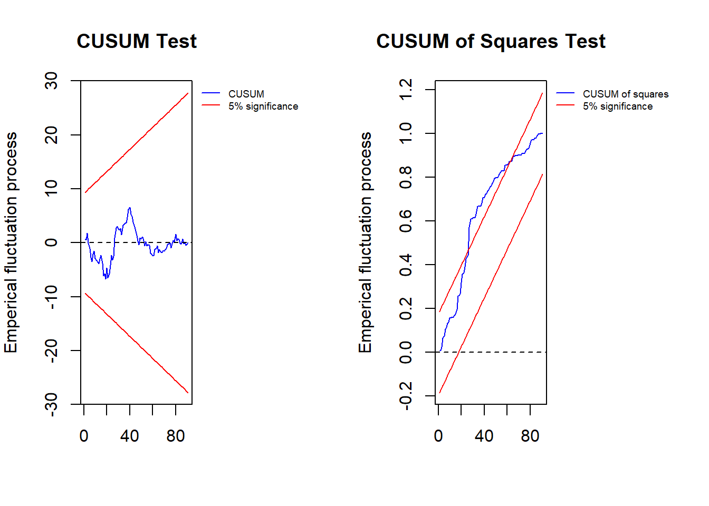

# install.packages("ardl.nardl")
library(ardl.nardl)Warning: package 'ardl.nardl' was built under R version 4.4.3Registered S3 method overwritten by 'quantmod':
method from
as.zoo.data.frame zoo # install.packages("ardl.nardl")
library(ardl.nardl)Warning: package 'ardl.nardl' was built under R version 4.4.3Registered S3 method overwritten by 'quantmod':
method from
as.zoo.data.frame zoo # Data
datanardl <- read.csv("Data/Bab 9/datanardl.csv")
head(datanardl) date price.Vietnam price.China
1 1/1/2002 115 143.7978
2 2/1/2002 105 129.4568
3 3/1/2002 100 127.9081
4 4/1/2002 117 149.8740
5 5/1/2002 103 131.0987
6 6/1/2002 113 145.1878# Phillips-Perron Unit Root Test
PP.test(datanardl$price.Vietnam)
Phillips-Perron Unit Root Test
data: datanardl$price.Vietnam
Dickey-Fuller = -5.6063, Truncation lag parameter = 3, p-value = 0.01PP.test(datanardl$price.China)
Phillips-Perron Unit Root Test
data: datanardl$price.China
Dickey-Fuller = -5.0955, Truncation lag parameter = 3, p-value = 0.01# Auto Selecet Model
model1 <- gets_nardl_uecm(x = datanardl,
decomp = 'price.China',
dep_var = 'price.Vietnam',
p_order = c(5),
q_order = c(5),
graph_save = TRUE,
case = 3,
F_HC = TRUE)Percentage of positive changes in decomp is 56 percent while negative change is 44
# Cointegratio Test
model1$cointegration$Fstat observation k fstat case lower.b upper.b
10% critical value 91 1 10.88198 3 4.04 4.78
5% critical value 91 1 10.88198 3 4.94 5.73
1% critical value 91 1 10.88198 3 6.84 7.84# NARDL Form
summary(model1$Parsimonious_NARDL_fit)
Call:
lm(formula = price.Vietnam ~ price.Vietnam_1 + price.Vietnam_3 +
price.Vietnam_4 + price.Vietnam_5 + price.China_pos + price.China_pos_1 +
price.China_pos_2 + price.China_pos_4 + price.China_pos_5 +
price.China_neg + price.China_neg_1 + price.China_neg_4 +
price.China_neg_5, na.action = na.exclude)
Residuals:
Min 1Q Median 3Q Max
-16.3047 -4.4665 -0.3095 4.0691 21.2637
Coefficients:
Estimate Std. Error t value Pr(>|t|)
(Intercept) 66.70011 14.83287 4.497 2.40e-05 ***
price.Vietnam_1 0.52746 0.09462 5.575 3.52e-07 ***
price.Vietnam_3 0.14052 0.10138 1.386 0.16974
price.Vietnam_4 -0.03782 0.10453 -0.362 0.71847
price.Vietnam_5 -0.14259 0.09817 -1.452 0.15043
price.China_pos 0.08230 0.18191 0.452 0.65223
price.China_pos_1 -0.28087 0.22492 -1.249 0.21553
price.China_pos_2 0.19196 0.17400 1.103 0.27338
price.China_pos_4 -0.26694 0.19885 -1.342 0.18341
price.China_pos_5 0.25245 0.16491 1.531 0.12991
price.China_neg 0.04123 0.15263 0.270 0.78778
price.China_neg_1 0.05460 0.17787 0.307 0.75969
price.China_neg_4 -0.50597 0.17240 -2.935 0.00440 **
price.China_neg_5 0.41552 0.15347 2.708 0.00835 **
---
Signif. codes: 0 '***' 0.001 '**' 0.01 '*' 0.05 '.' 0.1 ' ' 1
Residual standard error: 7.061 on 77 degrees of freedom
Multiple R-squared: 0.5657, Adjusted R-squared: 0.4923
F-statistic: 7.714 on 13 and 77 DF, p-value: 1.571e-09# NARDL ECM Form
summary(model1$Parsimonious_ECM_fit)
Call:
lm(formula = D.price.Vietnam ~ price.Vietnam_1 + price.China_pos_1 +
price.China_neg_1 + D.price.Vietnam_2 + D.price.Vietnam_3 +
D.price.Vietnam_4 + D.price.China_neg_4, na.action = na.exclude)
Residuals:
Min 1Q Median 3Q Max
-16.0510 -5.0380 -0.3461 3.9997 23.1158
Coefficients:
Estimate Std. Error t value Pr(>|t|)
(Intercept) 61.8968384 11.5905403 5.340 7.95e-07 ***
price.Vietnam_1 -0.5138343 0.0903867 -5.685 1.90e-07 ***
price.China_pos_1 -0.0192273 0.0771006 -0.249 0.8037
price.China_neg_1 0.0003975 0.0741449 0.005 0.9957
D.price.Vietnam_2 0.0790419 0.0929207 0.851 0.3974
D.price.Vietnam_3 0.2409279 0.0963186 2.501 0.0143 *
D.price.Vietnam_4 0.1413008 0.0922292 1.532 0.1293
D.price.China_neg_4 -0.5632653 0.1217687 -4.626 1.36e-05 ***
---
Signif. codes: 0 '***' 0.001 '**' 0.01 '*' 0.05 '.' 0.1 ' ' 1
Residual standard error: 7.093 on 83 degrees of freedom
Multiple R-squared: 0.4579, Adjusted R-squared: 0.4122
F-statistic: 10.01 on 7 and 83 DF, p-value: 5.192e-09# Long Run Coefficients
model1$Longrun_relation Estimate Std. Error t value Pr(>|t|)
price.China_pos_1 -0.0374192226 0.1505206 -0.248598606 0.8042781
price.China_neg_1 0.0007735328 0.1442840 0.005361181 0.9957351# Long Run Asymetric Test
model1$longrun_asym Fstat Pval
price.China 5.031109 0.02756084# Short Run Asymetric Test
model1$Shortrun_asym Fstat Pval
price.China 21.39708 1.359712e-05